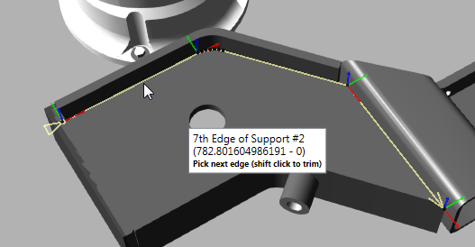
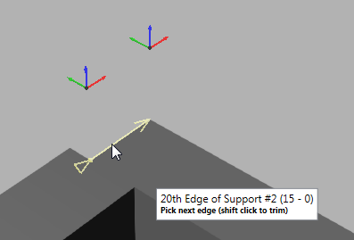
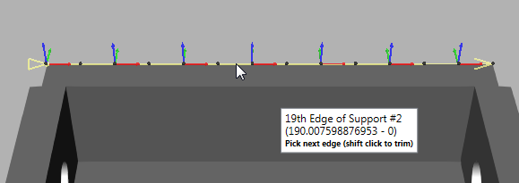
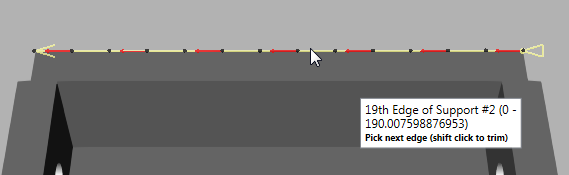
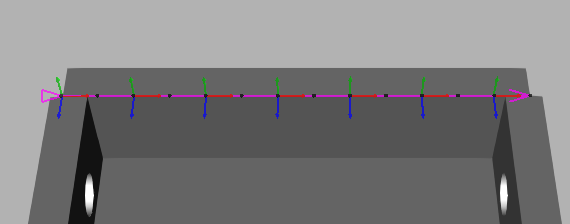
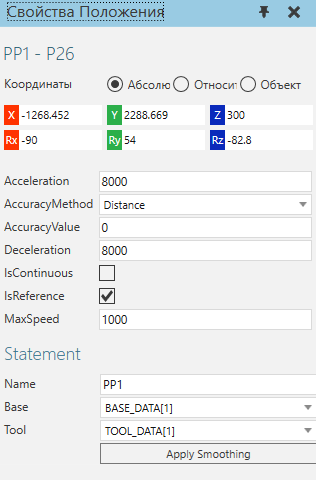
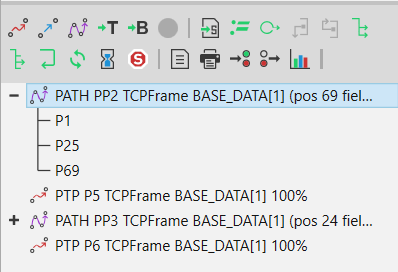
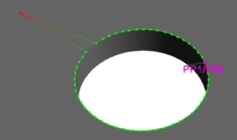

Оператор Path позволяет добавлять и редактировать позиции робота вдоль кривых и биссектрис геометрии.

Добавить путь и позиции
Первоначально оператор Движение по траектории (PATH) представляет собой пустой набор позиций, поэтому команда Выбрать кривую (Select Curve) используется для выбора геометрии и добавления новых позиций пути. Направление подачи инструмента для траектории — это положительная ось X системы координат активной рамки инструмента в конфигурации робота.
1.Нажмите на вкладку Программирование, а затем используйте команду Взаимодействие, чтобы выбрать робота, которого вы хотите запрограммировать в трехмерном мире.
2.На панели Редактор программ, выберите подпрограмму, в которую вы хотите включить оператор Path, а затем на панели инструментов Операторы, нажмите Движение по траектории.
3.В области задач Выберите кривую и выполните одно или несколько из следующих действий:
·Для выбора геометрии в разделе Выбрать, включите Ребро и/или Кривая.
·Чтобы определить расширение пути вдоль выбранных кривых, в разделе Авторасширение, внесите необходимые изменения в эти свойства. Вам необходимо так настроить эти свойства, чтобы выбрать допустимые кривые. Например, вы можете захотеть, чтобы путь был непрерывным и скругленным, за исключением тех, которые находятся на пороге 90 градусов или выше.

·Чтобы сместить позиции пути, в разделе Смещение кривой, внесите необходимые изменения в эти свойства. Точка кривой имеет следующую ориентацию: ось X указывает вдоль кривой, ось Y указывает перпендикулярно плоскости XY, а ось Z указывает перпендикулярно поверхности кривой. Ориентация положения пути вычисляется с использованием ориентации точки кривой и свойств параметров движения.

·Чтобы повлиять на визуализацию и количество позиций пути, в разделе Плотность точек, внесите необходимые изменения в эти свойства. Хордовое отклонение и Угловое отклонение свойства могут использоваться для изменения точности пути. Свойство Максимальное расстояние можно использовать для создания большего или меньшего количества точек в зависимости от длины сегмента кривой.

·Чтобы определить конфигурацию робота и порядок выполнения позиций пути, в разделе Параметры движения, внесите необходимые изменения в эти свойства. За исключением свойства Развернуть, большинство этих свойств применяются после создания пути, поскольку они используются для создания операторов движения, а не точек кривой. Вы можете установить флажок Показать исходную кривую, чтобы показать точки кривой с их осями координат, в противном случае точки кривой отображаются с их осью приближения. Точки кривой всегда видны, но оси координат и приближения отображаются/скрываются в зависимости от положения камеры 3D-мира, чтобы показать больше или меньше деталей, не мешая обзору. В большинстве случаев вам нужно обратить особое внимание на свойства Ось подхода и Выровнять по, так как они напрямую влияют на ориентацию робота в каждой позиции пути.

4.В трехмерном мире укажите на ребро или кривую, которую вы хотите создать как путь. Пояснение к визуальной обратной связи: оси координат или ось подхода появятся в рассчитанной точке кривой;

5.Сделайте одно из следующих действий:
·Если путь, выделенный желтым цветом, приемлем, щелкните ребро или кривую. Цвет выделения изменится с желтого на фиолетовый.

·Если путь, выделенный желтым цветом, неприемлем, сделайте одно из следующих действий:
·Чтобы изменить выбор кривой и свойства пути, вернитесь к шагу 3. Как правило, вам нужно делать это только при создании непрерывного пути. Несмотря на это, вы можете использовать панель задач Выбрать кривую для редактирования пути после того, как вы выбрали кривую.
·Чтобы выбрать другое ребро или кривую, вернитесь к шагу 4. Если у вас возникли трудности с выбором края или кривой, включите подсветку камеры. Если ориентация пути является проблемой, отрегулируйте указатель до тех пор, пока координатные оси точки кривой не станут приемлемыми. Если направление пути является проблемой, переместите указатель вперед или назад вдоль пути, чтобы настроить направления конечных точек.
·Чтобы выбрать кривую, а затем отредактировать ее путь, щелкните ребро или кривую, а затем перейдите к шагу 6.
6.Сделайте одно из следующих действий:
·Чтобы отменить выбор кривых, нажмите клавишу Backspace.
·Чтобы обрезать путь, удерживайте нажатой клавишу SHIFT, а затем укажите место на пути, где вы хотите обрезать, а затем щелкните это место. Это можно сделать только с помощью начальной и конечной точек кривой. То есть вы можете обрезать начало или конец пути до точки. В этом случае операция обрежет ту конечную точку, которая ближе всего к вашему выбору.

·Чтобы изменить путь, в области задач Выберите кривую, отредактируйте одно или несколько свойств. Путь будет автоматически обновлен в трехмерном мире.
·Чтобы продолжить выбор кривых, выполните одно или несколько из следующих действий:
·Чтобы свободно выбрать другую кривую, повторите шаги 4 и 5 с некоторыми уточнениями. Точка, в которой новая кривая соединится с траекторией, будет выделена желтым цветом. Если новая кривая имеет общую точку с путем, это может изменить конфигурацию всего пути.

В противном случае соединительная линия (штриховая линия) отмечает, где путь продолжается от конца одной кривой до начала другой кривой.

7.В области задач Выберите кривую, нажмите Генерировать.
Выберите путь и позиции
Движение по траектории (PATH)
Оператор Движение по траектории (PATH) можно выбрать, как и любой другой обычный оператор в программе робота.
1.Нажмите на вкладку Программирование, а затем используйте команду Взаимодействие, чтобы выбрать робота в 3D-мире.
2.На панели Редактор программы, выберите подпрограмму, а затем в списке Операторов, выберите оператор Движение по траектории (PATH).
Позиция
Любая позиция оператора Движение по траектории (PATH) может быть выбрана в трехмерном мире.
1.Нажмите на вкладку Программирование, а затем используйте команду Взаимодействие, чтобы выбрать робота в 3D-мире.
2.В 3D мире, сделайте одно из следующих действий:
·Чтобы выбрать положение, щелкните цветную точку нужного положения.
·Чтобы выбрать положение вдоль сегмента пути, щелкните линию нужного сегмента пути. Это выберет позицию этого сегмента пути, ближайшую к указателю.
Подсказка:
·Выбрав положение пути, используйте клавиши со стрелками влево и вправо, чтобы выбрать предыдущее или следующее положение пути.
·Выбрав позицию траектории, используйте клавиши со стрелками вверх и вниз, чтобы выбрать следующую или предыдущую опорную позицию траектории.
·Используйте клавишу CTRL, чтобы добавить или удалить позиции пути из выделения в 3D-мире.
·Используйте команду Выделение, чтобы выбрать одну или несколько позиций пути. Это полезно, если вы хотите отредактировать несколько позиций и не хотите, чтобы активный робот привязывался к выбранной позиции.
·Используйте команду Взаимодействие для выбора положения траектории. Это полезно, если вы хотите обучить робота и исправить положение.
·Используйте панель Редактора программ для выбора опорных позиций пути.
Редактировать путь и позиции
Свойства оператора Движение по траектории (PATH) и опорные точки можно использовать для редактирования позиций пути.
1.Нажмите на вкладку Программирование, а затем используйте команду Взаимодействие, чтобы выбрать робота, которого вы хотите запрограммировать в трехмерном мире.
2.На панели Редактор программы, выберите процедуру, содержащую оператор Path, который вы хотите отредактировать, а затем сделайте одно из следующих действий:
·Чтобы заменить все позиции, нажмите оператор PATH (Движение по траектории), а затем в панели Свойства Выражения, нажмите Select Curve (Выберите кривую). Далее используйте панель задач Выберите кривую для выбора кривых и создания новых позиций робота для пути.
·Чтобы развернуть направление пути, нажмите на оператор Движение по траектории (PATH), а затем в панели Свойства Выражения, нажмите Развернуть.
·Чтобы заблокировать/разблокировать ось во всех положениях, щелкните оператор Движение по траектории (PATH), а затем в панели Свойства Выражения, свойство Заблокировать ось, щелкните ось, которую вы хотите заблокировать, или выберите Нет чтобы разблокировать все оси на основе системы координат положения траектории.
·Чтобы пометить положение как фиксированную точку и ссылку для изменения других положений, выберите положение пути, а затем на панели Свойства положения, выберите IsReference флажок.
·Чтобы отменить пометку положения в качестве контрольной точки, сделайте одно из следующих действий:
·Чтобы снять отметку с позиции, выберите позицию пути, а затем в панели Свойства положения, очистите флажок IsReference.
·Чтобы автоматически снять пометку со всех позиций, щелкните оператор Движение по траектории (PATH), а затем в панели Свойства Выражения, нажмите Clear References.
·Чтобы настроить ориентацию позиций, выполните все следующие действия:
·Отметьте одну или несколько позиций на пути в качестве опорных точек, а затем внесите необходимые изменения в эти точки. Например, вы можете изменить ориентацию положения, отмеченного как контрольная точка.
Особенность: Если вы используете более одной опорной точки, корректировки других положений будут смешаны на основе индекса кривой опорных точек и свойства Заблокировать ось и Интерполяция оператора Движение по траектории (PATH). Например, положения между опорными точками будут смесью этих положений, тогда как другие положения могут наследовать процент ориентации опорной точки.
·Нажмите оператор Движение по траектории (PATH), а затем в панели Свойства Выражения, внесите необходимые изменения в свойства, а затем щелкните Применить сглаживание (Apply Smoothing). Как правило, вы должны отредактировать свойство Lock Axis, чтобы добиться желаемой ориентации центральной точки инструмента. В таких случаях можно отрегулировать вращение контрольной точки вокруг оси Y, зафиксировать ось Y на пути, а затем применить сглаживание для обновления положения пути по оси Z.
·Чтобы применить смещение сопла к позициям, например к траектории сварки, выполните все следующие действия:
·Отметьте как минимум две позиции на пути в качестве опорных точек, а затем внесите необходимые изменения в эти точки. Как правило, вы должны отметить начальное и конечное положения сварного шва или кромки/кривой, для которых требуется смещение кончика инструмента.
·Нажмите Движение по траектории (PATH), а затем в панели Свойства Выражения, установить свойство Смещение сопла (Nozzle Offset) на желаемое значение, а затем щелкните Применить смещение сопла.
·Чтобы показать/скрыть метки для положений, отмеченных как контрольные точки, нажмите Движение по траектории (PATH), а затем в панели Свойства Выражения, сделайте одно из следующих действий :
·Чтобы скрыть метки, снимите флажок Показать метки (Show Labels).
·Чтобы отобразить метки, установите флажок Показать метки (Show Labels).
·Чтобы использовать другой манипулятор для положения траектории при Взаимодействии с роботом, нажмите на оператор Движение по траектории (PATH), а затем в панели Свойства Выражения, Сделайте одно из следующих действий:
·Чтобы использовать инструмент Перемещение, снимите флажок Ручки вращения (Rotation Handles).
·Чтобы использовать интерактивные кольца для вращения в системе координат выбранного положения, установите флажок Ручки вращения. Это уникально для каждого оператора Движение по траектории (PATH). Если для свойства Lock Axis установлено значение None, вы можете вращаться по трем осям.
Свойства пути и положения
Тип движения
Позиции робота, сгенерированные оператором Path, представляют собой непрерывные линейные движения. Каждый оператор движения может быть помечен как фиксированная точка отсчета для изменения других позиций на пути. Свойства Name, Base и Tool оператора Path используются совместно с его позициями. Редактирование этих свойств в одной позиции приведет к обновлению всех других позиций по тому же пути.

Группировка
В панели Редактор программ оператор Движение по траектории (PATH) указан с его опорными точками, а его заголовок показывает количество позиций в пути. Другие операторы не могут быть вложены в оператор Path.

Маркировка
В трехмерном мире путь — это цветная линия. Зеленый цвет используется для обозначения сегментов пути в пределах досягаемости робота. Градиент от зеленого к красному используется для отображения недоступных сегментов пути. Опорные точки помечены как положения робота и окрашены в пурпурный цвет. Другие точки на пути обозначены цветными точками: зеленые точки — достижимые позиции, а красные точки — недоступные позиции.
